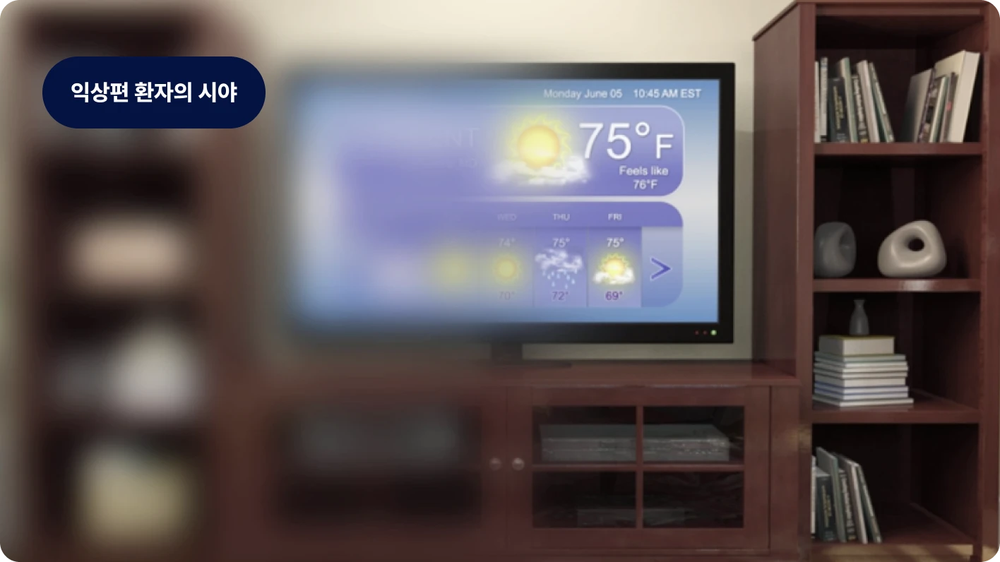

시력 저하와 미용적 문제를 일으키는 익상편
익상편(Pterygium)은 눈 흰자(결막) 조직이 자라서 각막(검은 눈동자)을 덮는 질환입니다. 주로 자외선 노출, 바람, 먼지 등 환경적 요인에 의해 발생하며, 시간이 지나면 시력까지 침범할 수 있습니다. 시력 저하와 미용적 문제를 일으킬 수 있어 조기 진단과 치료가 중요합니다.
익상편 증상- 눈에 흰 막이 덮이는 느낌
- 충혈 및 눈물
- 이물감, 건조감
- 시야 흐림 (심한 경우)
흰자 조직이 검은동자를 덮는 익상편은 방치 시 시력 저하를 유발합니다. 아이리움의 정밀한 수술로 재발률을 낮추고 맑고 깨끗한 시야를 되찾으세요.

익상편(Pterygium)은 눈 흰자(결막) 조직이 자라서 각막(검은 눈동자)을 덮는 질환입니다. 주로 자외선 노출, 바람, 먼지 등 환경적 요인에 의해 발생하며, 시간이 지나면 시력까지 침범할 수 있습니다. 시력 저하와 미용적 문제를 일으킬 수 있어 조기 진단과 치료가 중요합니다.
익상편 증상진행 단계에 따른 맞춤형 치료
익상편은 진행 정도에 따라 단계별 치료를 시행합니다. 초기에는 인공눈물이나 항염증제로 증상을 완화하며 경과를 관찰하지만, 조직이 각막을 침범하여 시력 저하나 미용적 문제를 유발하는 경우에는 수술을 통해 자라난 결막을 절제하고 재발 방지 치료를 병행해야 합니다.
Step
Step
Step
Step
* 수술 후 환자별 안내해 드리는 회복 기간 주의사항의 내용을 꼭 따라주세요.